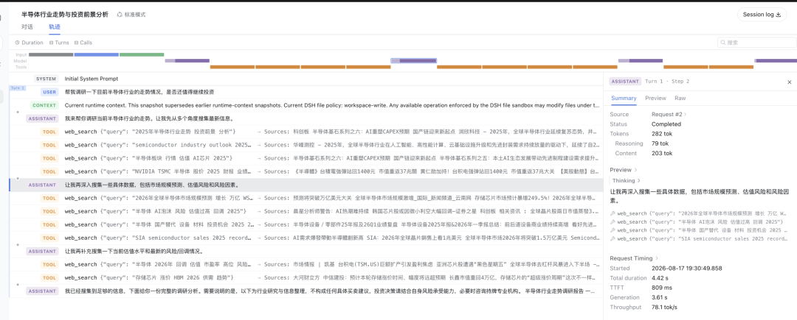
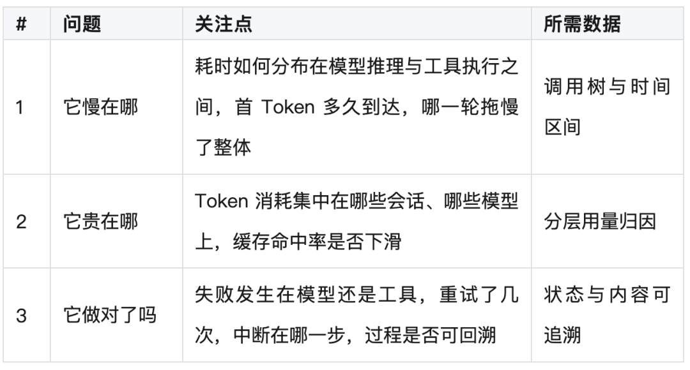
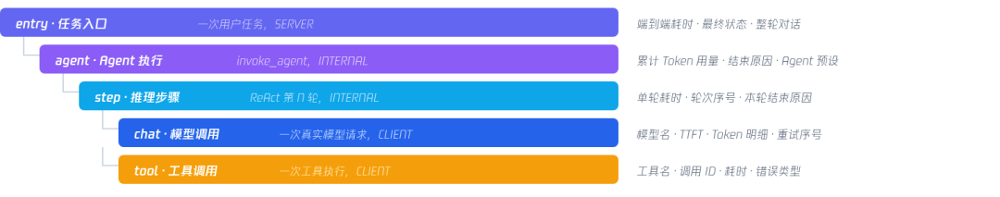
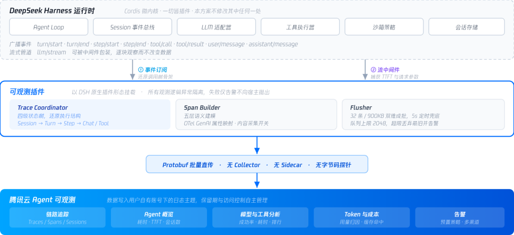
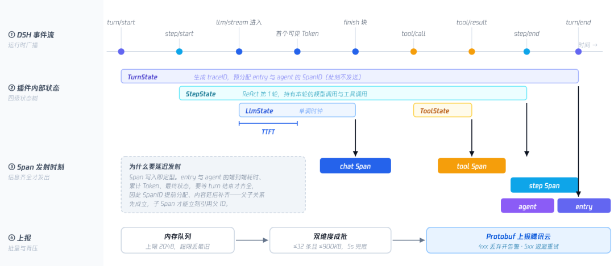
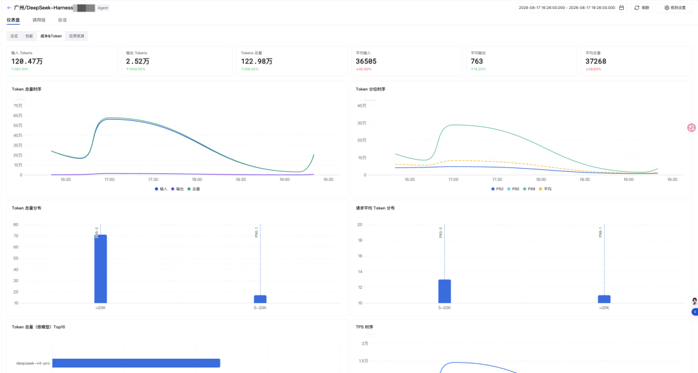
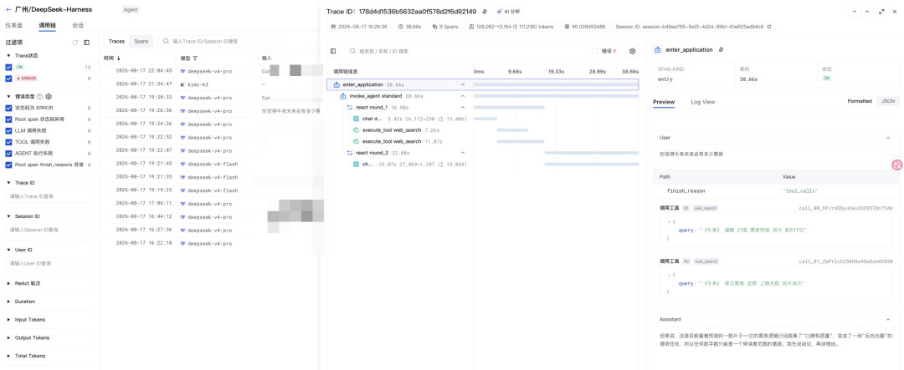
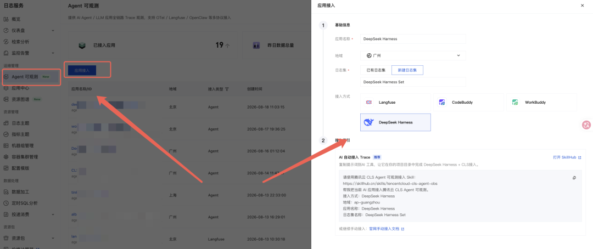
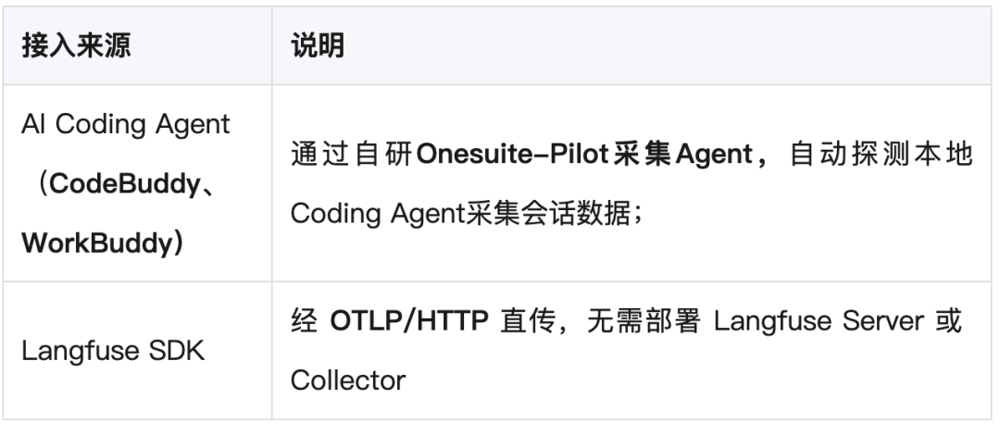

作者：trumphuang
一、导语
Agent 已经进入不少团队的日常研发流程。规模上来之后，使用方的关注点不再只是单次结果是否正确，还包括三件事：耗时花在模型推理还是工具执行上；Token 消耗集中在哪些会话、哪些模型上；失败与中断发生在哪一步，过程是否可以回溯。
DeepSeek Harness（下文简称 DSH）是 DeepSeek 开源的 Agent 框架，自带会话轨迹视图、Session 事件流落盘与工具调用检索，作用域是本机、单会话、实时；一旦要看一批任务的整体表现、一段时间的成本分布，或复现几天前的一次失败，就需要跨会话、跨机器且可长期留存的结构化链路数据。
腾讯云 Agent 可观测在已有的 OneSuite Agent 观测能力基础上，提供了针对 DSH 的采集插件：以原生插件形态挂载，将执行过程还原为结构化调用链，覆盖任务与推理轮次、模型调用、工具调用、会话关联，配合链路检索、聚合分析与平台本身的告警仪表盘等能力，构成针对 DSH 的全景Agent 可观测方案。
二、DeepSeek Harness 的运行原理
DSH 是一个开源的编码 Agent 框架，命令行名 dsh，用于让大模型在受控环境中自主完成一个完整任务：读写文件、执行命令、调用外部服务，并根据每一步的结果决定下一步动作。
组织方式上，DSH 采用 Cordis 微内核加全插件化：内核只负责按 profile 装配插件与管理生命周期，模型适配器、工具集、沙箱策略、会话持久化等均为可插拔插件，web / tui / headless 三种形态共用同一个内核，可观测能力同样挂载在这一层。
执行模型是 ReAct 循环：一次用户任务称为一个 turn，turn 内的每一轮推理、调用工具、观察结果称为一个 step。循环轮数与调用哪些工具由模型在运行时决定，因此执行结构在运行前无法确定。
图1 DSH 的分层结构、一次 turn 的执行时序，以及对外的两条数据产出
2.1 DSH 自带了什么
基于上述事件流与落盘数据，DSH 自身提供了三项开箱即用的观测能力：
会话轨迹——浏览器内按轮次组织的执行记录表，可查看单条记录的 Token 用量与耗时。
Session 事件流落盘——完整事件流以 zstd 压缩的 JSONL 落盘于 $DSH_HOME/sessions/，数据无损。
工具调用检索——工具的调用参数与返回结果记录在事件流中，并支持会话全文检索。

2.2 为什么还需要在这份数据之上完善调用关系
DSH 的过程数据是按时间排列的会话事件序列，且保存在本机：目前暂时没有调用关系与各自的时间占用统计，在实际业务部署规模扩大后随着机器数量增大，三个问题会变得突出：

实现这些能力的共同前提是把一次任务还原成一棵带父子关系与时间区间的调用树，并让数据可以跨会话、跨机器汇聚与长期留存。
三、腾讯云 Agent 可观测提供了什么
基于目前已有的OneSuite Agent能力基础上，提供一个 DSH 插件挂载在 DSH能力插件层，对接运行时的事件总线与流式管道，聚焦做三件事：
订阅——订阅生命周期事件，并在模型流式管道上包一层中间件，逐块观察而不改变数据，不插桩、不改代码。
建模——在插件内维护状态树，把散落的事件还原成五层调用树，映射为符合 OpenTelemetry GenAI 语义约定的 Span。
上报——数据批量直传腾讯云 Agent 可观测，不经过 Collector 或常驻采集进程。
3.1 数据地基：五层调用树
插件上报的调用链路分成五个层级，与 DSH 的实际执行结构一一对应：一个 turn 对应一次任务，turn 内有若干 step，step 内有模型调用与工具调用。

一次 turn 一条 trace——多轮对话通过 gen_ai.session.id 横向关联，避免长会话产生无限膨胀的单条链路。
重试不被合并——每次真实模型调用生成独立 chat Span，以 dsh.llm.attempt 标记序号。
中断也画完整——流未收尾、step 先于工具结束、用户中断等场景均补发带错误码的 Span。
各层属性均遵循 OpenTelemetry GenAI 语义约定，便于与既有可观测体系对齐，也便于后续接入其他 Agent 框架时保持同一套口径。

图4 整体技术架构与数据路径
Agent 的执行结构由模型在运行时决定，层级深度不固定，而链路数据要求父子关系明确、时间区间完整。插件通过状态树与延迟发射处理这一差异构造整体采集上报能力。

图5 一次 turn 的完整处理逻辑：事件流 → 状态树 → Span 发射 → 批量上报
四、接入后腾讯云Agent可观测后能看到什么
接入后，DSH 的每一次任务都会形成一条完整链路，并按会话、模型、工具等维度汇总：
完整调用链——entry / agent / step / chat / tool 五层逐层展开，父子关系与各层耗时占比清晰可见
耗时分布——端到端与单轮耗时、模型推理与工具执行各自的占用，以及首 Token 延迟与 P95 分位数
Token 与成本——输入、输出分别统计，可下钻到单次模型调用，也可按会话、模型聚合排行
调用明细——模型名称、结束原因与重试次数，工具名称、耗时、错误情况统计
失败定位——每层 Span 带独立状态并支持错误类型自定义，可用于区分模型侧失败、工具侧失败与循环中断
检索与告警——Traces / Spans / Sessions 三种视角，支持按 Trace ID、Session ID 与状态检索，并可对耗时、失败率配置告警
下述为部分能力，更多能力可在Agent可观测控制台体验

图6 可观测面板 - Token消耗部分

图7 调用链面板 - 一次完整的DeepSeek Harness任务执行过程
五、接入实践
目前tencentcloud-agentobs-sdk-dsh已发正式版本，并已被 DSH 社区插件市场收录（当前版本支持 DSH >=0.1.0-rc.6 <0.2.0，要求 Node.js >=22.19.0）
前提条件
已开通日志服务 CLS，并准备好具备日志写入权限的访问凭证，建议使用 CAM 子账号或临时密钥。
已安装 DSH，版本在 >=0.1.0-rc.6 <0.2.0 区间内；插件运行环境的 Node.js 为 18.0.0 或更高。
创建 Agent 可观测应用
1. 登录日志服务控制台，在左侧导航栏中选择 Agent 可观测，单击 应用接入 创建应用，接入方式选择DeepSeek Harness

2. 进入应用详情，在日志主题列表中找到名称为 {应用名称}-trace-topic 的日志主题。
3. 复制该日志主题 ID，用于后续配置中的 CLS_TOPIC_ID 或 topicId。
方式一：通过Skill安装+配置
复制以下提示词到 AI 工具，让它在你的项目目录中完成 DeepSeek Harness接入。
请使用腾讯云 Agent 可观测接入 Skill：https://skillhub.cn/skills/tencentcloud-cls-agent-obs帮我把当前 AI 应用接入腾讯云 Agent 可观测。接入方式：DeepSeek HarnessRegion：ap-guangzhou
方式二：手动安装+配置
前置依赖
全局安装 DeepSeek Harness CLI：
npm install -g @deepseek-ai/dsh安装插件
dsh plugin --profile web add tencentcloud-agentobs-sdk-dshdsh plugin --profile headless add tencentcloud-agentobs-sdk-dshdsh plugin --profile harness add tencentcloud-agentobs-sdk-dsh
注意：安装或更新插件后，需要重启 DSH 服务才能生效。
pnpm 构建脚本问题
pnpm v9+ 默认禁止依赖包运行 install 脚本。如果安装时遇到以下错误：
[ERR_PNPM_IGNORED_BUILDS] Ignored build scripts: protobufjs@6.11.6Run "pnpm approve-builds" to pick which dependencies should be allowed to run scripts.
在对应 profile 目录执行一次即可（后续安装/更新不再需要）：
cd ~/.dsh/profiles/webecho "enable-scripts=true" >> .npmrcpnpm install
headless / harness profile 同理，将路径改为 ~/.dsh/profiles/headless 或 ~/.dsh/profiles/harness。
配置连接信息
方式一：环境变量（推荐）
export CLS_ENDPOINT=ap-guangzhou.cls.tencentcs.comexport CLS_TOPIC_ID=your-topic-idexport CLS_SECRET_ID=your-secret-idexport CLS_SECRET_KEY=your-secret-keyexport CLS_SERVICE_NAME=dsh-agent # 可选，用于区分实例或业务dsh --profile web
方式二：手动调整插件配置文件
编辑 $DSH_HOME/profiles/<profile>/cordis.patch.yml，未设置 DSH_HOME 时默认为 ~/.dsh/profiles/<profile>/cordis.patch.yml：
- id: cls-observabilityconfig:endpoint: ap-guangzhou.cls.tencentcs.comtopicId: your-topic-idsecretId: your-secret-idsecretKey: your-secret-keyserviceName: dsh-agentcaptureContent: truebatchMaxSize: 32flushIntervalMs: 5000debug: false
显式插件配置优先于环境变量。以及访问凭证属于敏感信息，建议通过环境变量或密钥管理工具注入，不要将真实 SecretId 与 SecretKey 提交到代码仓库。
启动并验证
dsh --profile web启动后发起一次测试任务，至少触发一次模型调用
卸载插件
dsh plugin --profile web remove tencentcloud-agentobs-sdk-dshdsh plugin --profile headless remove tencentcloud-agentobs-sdk-dshdsh plugin --profile harness remove tencentcloud-agentobs-sdk-dsh
关闭内容捕获
默认情况下，prompts、responses、tool arguments/results 会附加到 span。如需关闭：
export OTEL_INSTRUMENTATION_GENAI_CAPTURE_MESSAGE_CONTENT=falsedsh --profile web
或在插件配置中设置 captureContent: false。
配置文件完整配置项
设置 | 默认值 | 说明 |
enabled | true | 禁用采集但不卸载插件 |
endpoint | CLS_ENDPOINT | CLS API 接入点 |
topicId | CLS_TOPIC_ID | CLS 日志主题 ID |
secretId | CLS_SECRET_ID | 腾讯云 SecretId |
secretKey | CLS_SECRET_KEY | 腾讯云 SecretKey |
serviceName | deepseek-harness | 服务名 |
captureContent | true | 捕获 prompts/responses/tool 内容（设为 false 关闭） |
contentMaxChars | 128000 | 单个内容属性最大字符数 |
batchMaxSize | 32 | 每批上报最大 span 数 |
maxQueueSize | 2048 | 队列上限，超限丢弃最旧 span |
flushIntervalMs | 5000 | 定时刷新间隔（毫秒） |
retryTimes | 3 | 上报重试次数 |
debug | false | 启用调试日志 |
六、腾讯云 Agent 可观测还提供哪些接入方式与能力
DSH 插件是接入形态之一。除此之外，腾讯云 Agent 可观测还提供以下上报方式，它们写入同一套数据模型，可在同一个控制台内查看与横向对比：

目前接入生态正在持续丰富中，逐步支持通用Agent框架（如langchain、OpenAI Agent SDK等）和Coding Agent（如CodeX、ClaudeCode等）中
数据上报后，控制台侧已提供的分析能力：
应用列表——已接入应用、上报中应用、昨日写入量与昨日 Token 总数，以及各应用的地域、状态与接入类型。
仪表盘——总览（请求数与错误数、模型调用次数、Input/Output Tokens、Agent 与模型 Top10、平均 TTFT）、性能（耗时直方图与 P50/P90/P99 分位趋势、模型平均耗时 Top10）、成本 & Token、应用观测（按 generation / tool / chain / agent / retriever / guardrail / event 等类型分析调用分布与耗时）。
调用链——Traces 与 Span两种视图，可按状态、错误类型（工具调用失败、LLM 调用失败、Root span 状态码异常、Agent 执行失败）、Trace ID、Session ID 与耗时筛选，详情页提供调用树、节点 Input/Output 与错误根因定位。
会话——按 Session 聚合 Trace，支持按会话时长、Trace 数、Token 与成本筛选，还原多轮对话上下文。
告警能力——支持对常用指标比如可对耗时、失败率等异常情况配置告警
七、总结
DSH 原生的轨迹视图与事件流落盘，解决的是本机、单会话、实时的调试问题；本文方案在此基础上把同一批运行时事件还原为结构化的五层调用链，补充跨会话聚合、跨机汇聚、长期留存与告警能力，帮助用户快速搭建针对DeepSeek Harness的运维观测体系。
项目GitHub：
https://github.com/TencentCloud/tencentcloud-agentobs-sdk-dsh
相关接入指南：
Agent 可观测应用详情：
接入 AI Coding Agent 数据（Onesuite-Pilot）：
https://cloud.tencent.com/document/product/614/135910
使用 Langfuse SDK 上报 Trace 数据到 CLS：
https://cloud.tencent.com/document/product/614/133518
有任何关于 Agent 可观测的问题和建议，欢迎入群交流 ⬇️